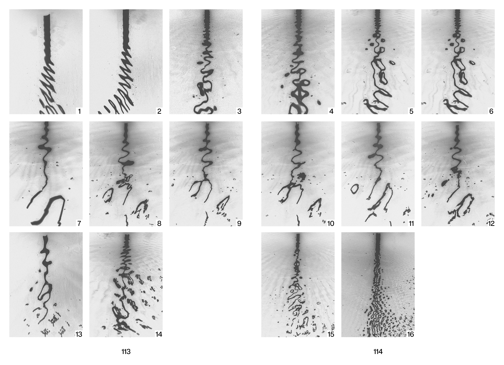
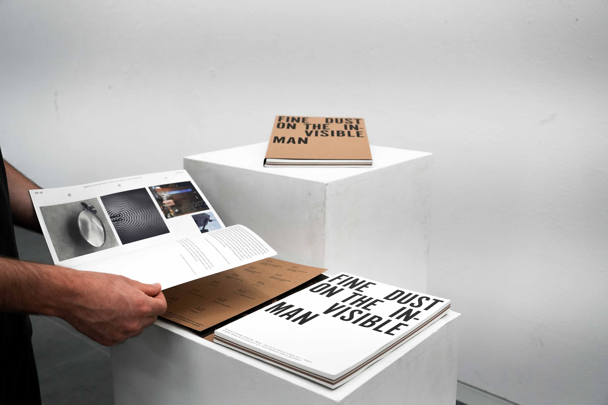
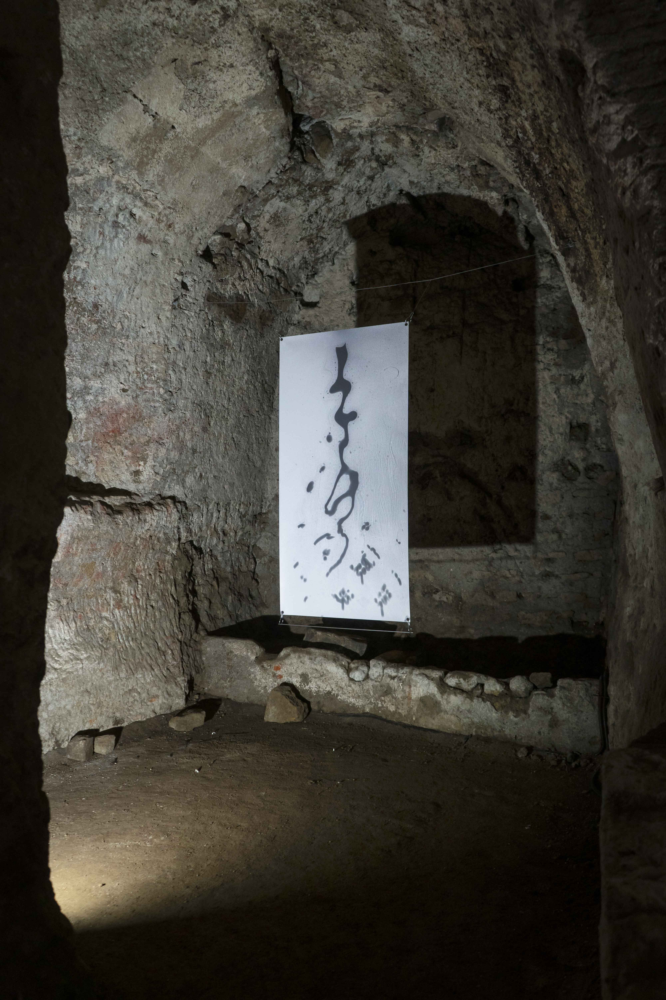
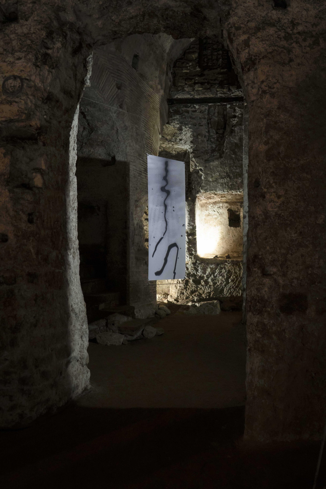
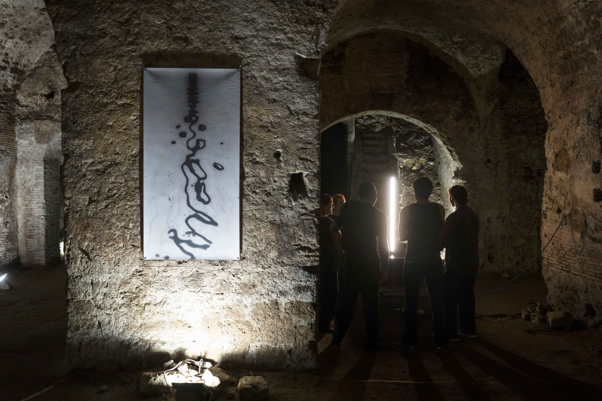
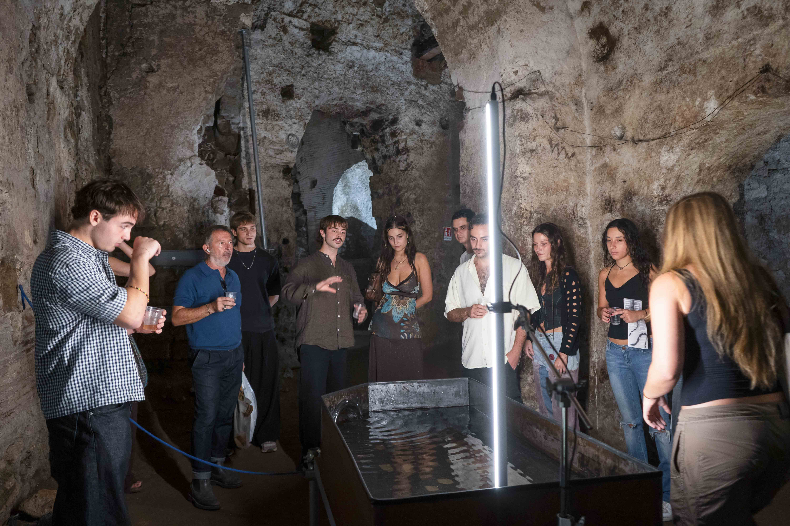
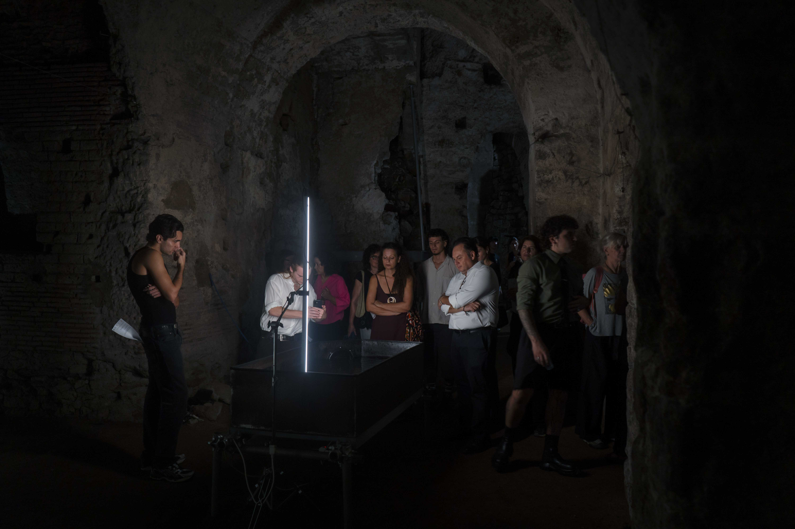
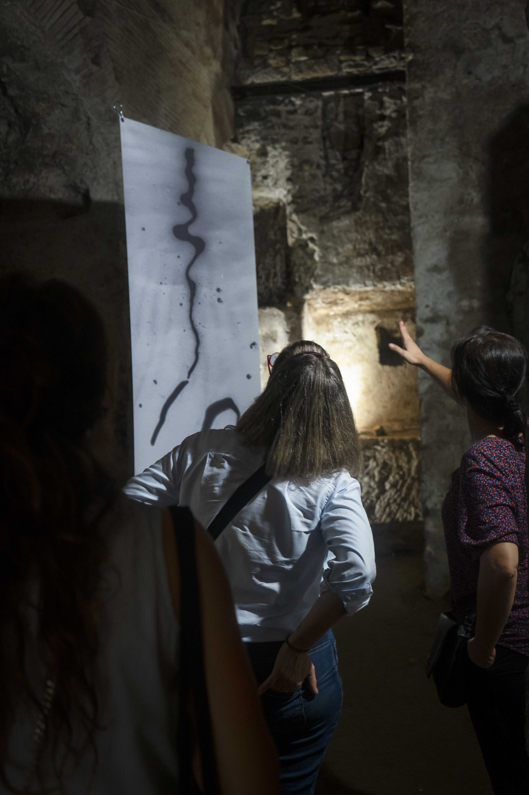

Fine dust on the invisible man
Installation + Book + Video
Fine dust on the invisible man — Polvere fine sull’uomo invisibile, Simone Grimaldi (2026).
The project is an installation that stems from a desire to aesthetically ‘clothe’ that which, in everyday life, remains off-screen: the subtle web that connects elements, presences and forces of nature. The work does not aim to represent or explain, but to create a condition in which these relationships can emerge as a sensory experience.
Through a minimalist, horizontal structure (160 × 80 cm, height approx. 30 cm), the programmed installation constructs a field of existence in which the interaction between elements becomes the subject. In this space, what is normally invisible or overlooked is made perceptible, not as content to be interpreted, but as an optical unconscious to be revealed. Texts and images from the project *Fine dust on the invisible man* by Simone Grimaldi, produced as a degree project at NABA in 2026. With the participation of Giovanni Leopoldo Infante, Sergio Leone and Luigi Tirino.©2026 Simone Grimaldi.
Installation views by Sergio Leone at Acquedotto del Serino, Naples — Sept. 2026









